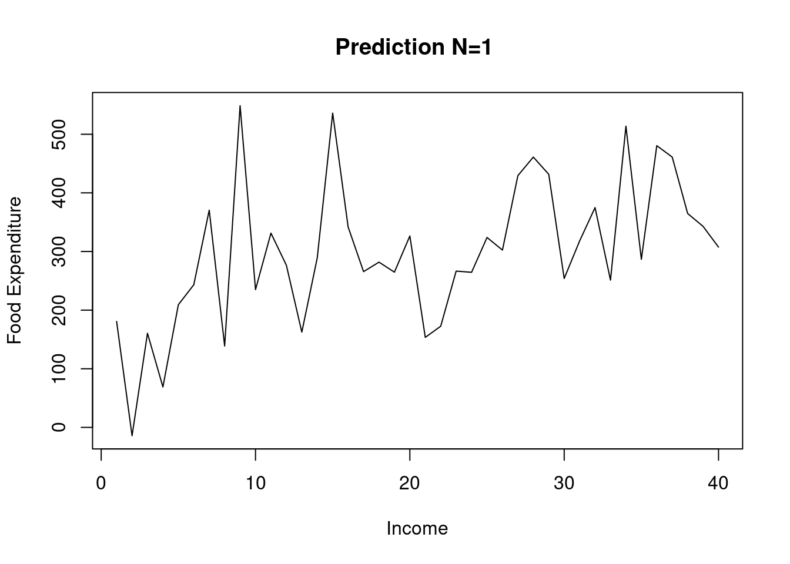
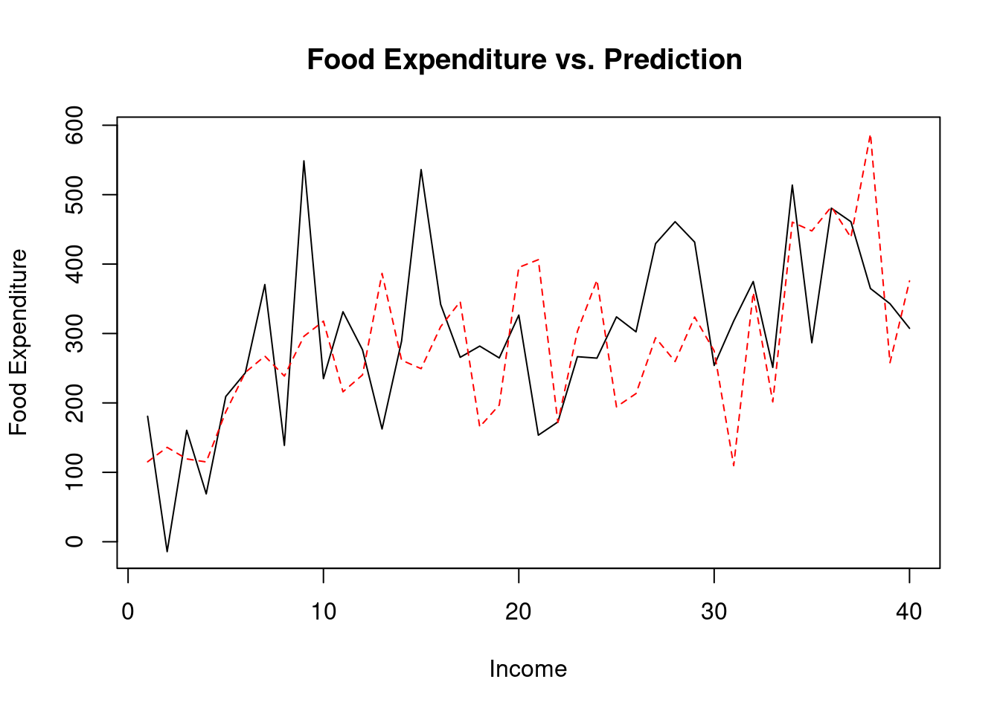
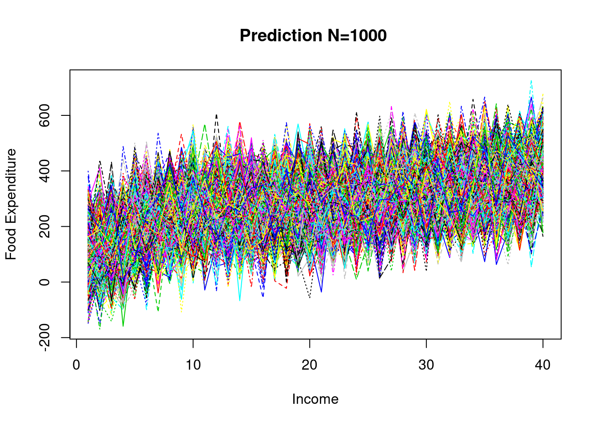

3 예측
N <- 40
sde <- 89.52
y1 <- b1+b2*x+rnorm(N, mean=0, sd=sde)
y2 <- data.frame()
y2 <- cbind(y1, y)3.1 예측 (1회)
matplot(y1, type='l', col=1:40,
xlab='Income', ylab='Food Expenditure',
main ='Prediction N=1 ')
3.2 예측 (1회)
matplot(y2, type='l', col=1:40,
xlab='Income', ylab='Food Expenditure',
main ='Food Expenditure vs. Prediction ')
3.3 예측 (1,000회)
b1 <- coef(reg)[[1]]
b2 <- coef(reg)[[2]]
yy <- data.frame()
trial <- 1
trials <- 1000
while(trial <= trials) {
y3 <- b1+b2*x+rnorm(N, mean=0, sd=sde)
yy <- rbind(yy, t(y3))
trial <- trial + 1
}3.4 예측 (1,000회)
matplot(t(yy), type='l', col=1:40,
xlab='Income', ylab='Food Expenditure',
main ='Prediction N=1000 ')
3.5 화일 저장
sink(‘ch4.out’)
# Least sqaures prediction (one time)
y1## [1] 180.75140 -14.22337 160.54056 68.98021 209.25377 243.28019 370.50405
## [8] 138.81817 548.68565 235.03431 331.33355 276.50667 162.48100 289.11015
## [15] 536.07111 341.89343 265.68566 281.85631 264.77620 326.50951 153.54006
## [22] 172.59099 266.58865 264.51736 323.92833 302.41703 429.46700 461.04679
## [29] 431.66011 253.98617 318.01341 374.88977 251.14452 513.76884 286.67489
## [36] 480.50203 461.03212 364.79234 342.83846 307.47833sink()